Measure first
Lean Six Sigma Green Belt. Each agent rollout follows DMAIC: baseline the manual effort, introduce the agent, then control the result.
Hands on Agentic QA Engineering Manager
Verisk Underwriting Solutions · Málaga, Spain
AI quality engineering, measured in hours given back to the team.
I've put AI agents to work on the repetitive parts of testing: refining requirements, triaging defects, and most of what happens in between. So far they've taken 3,500+ hours of manual effort off my team. We spend that time on risk-based and exploratory testing, which is still where people find the bugs that matter.
Each number is measured against the manual baseline it replaced.
labor hours saved by introducing the agentic approach and autonomous agents across QA activities and operations
Baseline: manual effort · Method: DMAIC
SDET and UAT QA analysts led in API, UI and performance testing
Acceptance and UAT environments · Agile
testing efficiency from an in-house API test cases generator, 700+ hours saved yearly
Two projects · 700+ hours a year
faster deployments through automated CI/CD quality gates
Bamboo and Jenkins · smoke and regression suites
Five stages of the testing lifecycle. Agents with project and product knowledge take the high-volume work while people make the calls that need judgement.
AI-assisted requirements analysis with human in the loop, grooming and refinement. Ambiguities, gaps and testability risks come up during refinement, while they are still cheap to fix.
Agent-assisted test authoring on a unified Playwright, K6 and Newman framework, plus code generators that produce API tests and assertions with full response coverage.
AI-powered analysis of test runs separates real regressions from noise, so the team acts on signal and the feedback loop stays short.
AI-powered defect classification and triaging routes issues to the right owner with consistent severity, cutting manual triage effort.
Autonomous agents take over recurring QA operations, with unified real-time reporting that notifies stakeholders the moment results land.
The codes are therbligs @Frank and Lillian Gilbreth.
I started in QA in 2018 as a manual tester. That's where I learned where testing time really goes, and it's why I moved into automation, then SDET work, then leading a team. Now I manage how we use AI in testing. Having done each of those jobs, I know which parts are repetitive enough to give to an agent. Triage, sorting through test results and the first read of new requirements go to agents, while the decisions stay with people. I measure a baseline before I introduce anything, because if the gain can't show up as a number on the report, I don't trust it.
Lean Six Sigma Green Belt. Each agent rollout follows DMAIC: baseline the manual effort, introduce the agent, then control the result.
Agents absorb the repetitive work. Analysts move up to exploratory, risk-based testing and to reviewing what the agents produce.
10+ internal trainings a year on current automation practices. Four team members certified in Playwright, and hands-on mentoring for analysts moving into automation.
Four insurance and underwriting projects consolidated onto a single framework I built from scratch. That removed tool sprawl and made quality comparable across projects.
MCP (Playwright, LangChain, Chrome DevTools) · LangGraph
Agents across 5 STLC stages
Playwright · K6 · NewmanAlso Cypress, WebdriverIO, JMeter, Mocha, Supertest, Jest / Vitest, Pytest
Team-wide framework built from scratch, 4 projects on it
Jenkins · Bamboo · GitHub Actions · DockerAlso GitLab CI, AWS
Automated quality gates, 2× faster deployments
JavaScript / TypeScript · Python
Agentic development in both languages
Lean Six Sigma (DMAIC) · ISTQBAlso risk-based testing, Agile / Scrum
Every agent rollout baselined first
Open-source utilities built and released for my own team.
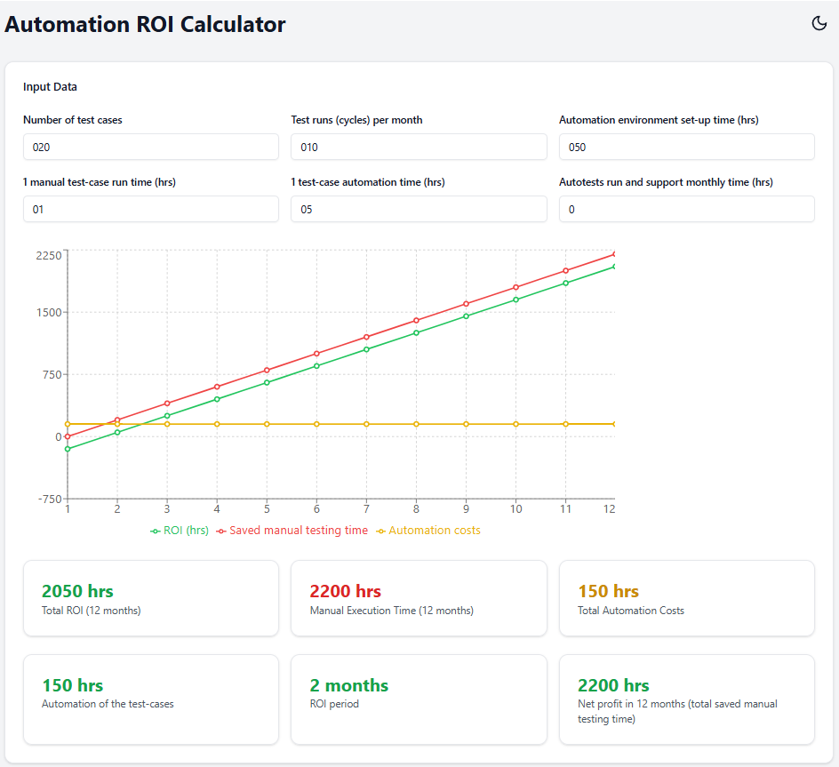
Pl. 01Models the return on investment of test automation for business cases.
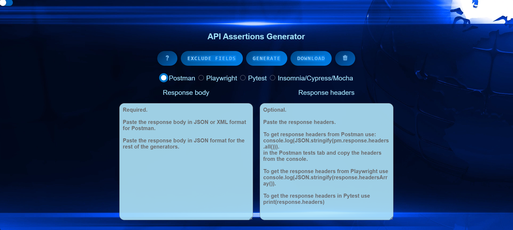
Pl. 02Generates API test assertions for Postman, Insomnia, Mocha/Cypress, Playwright and Pytest with full body, header and schema coverage.
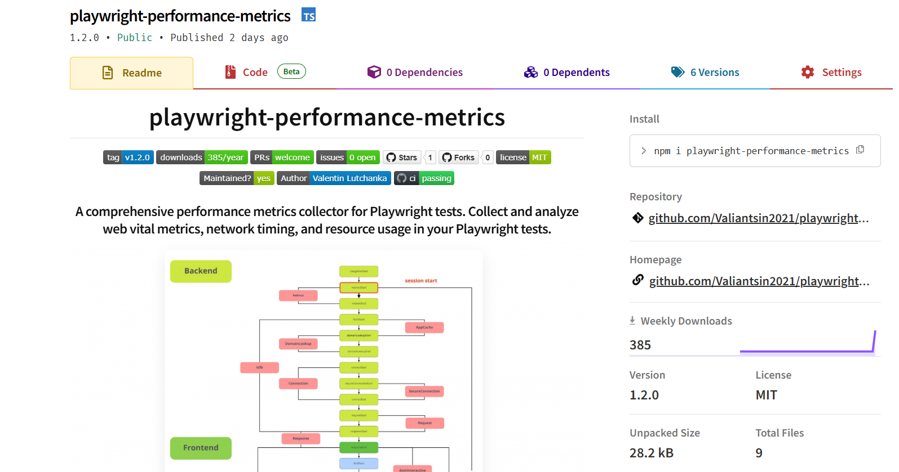
Pl. 03Collects web vitals, network timing and resource usage inside Playwright tests.
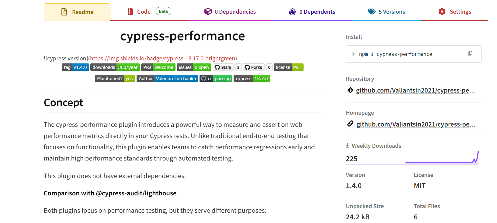
Pl. 04Cypress plugin to measure and assert on web performance metrics directly in tests.
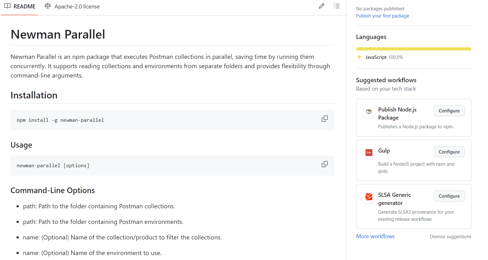
Pl. 05Runs Postman collections in parallel and saves HTML and XML reports.
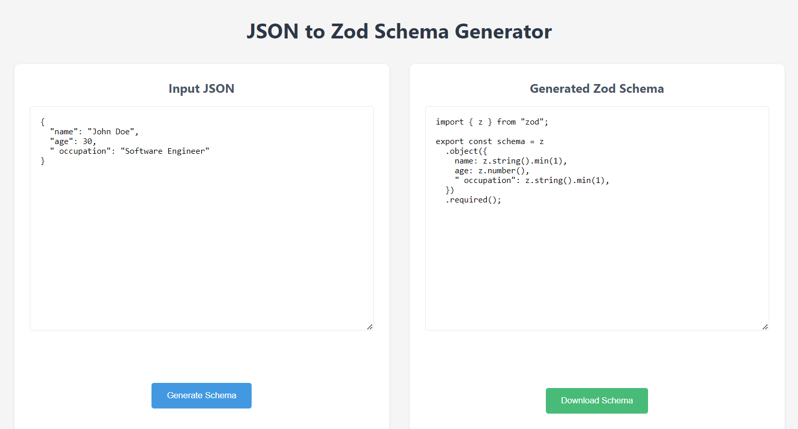
Pl. 06Generates Zod schemas from API responses for contract validation.
More tools, including an XML/JSON comparer and jtocsv, on GitHub.

DMAIC process improvement · 2024
LinkedIn Learning · 2025
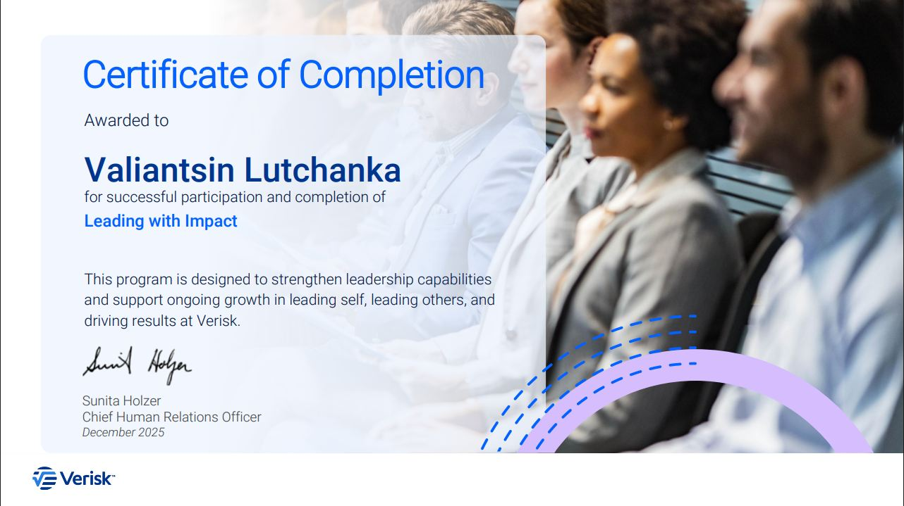
Verisk leadership cohort · 2025
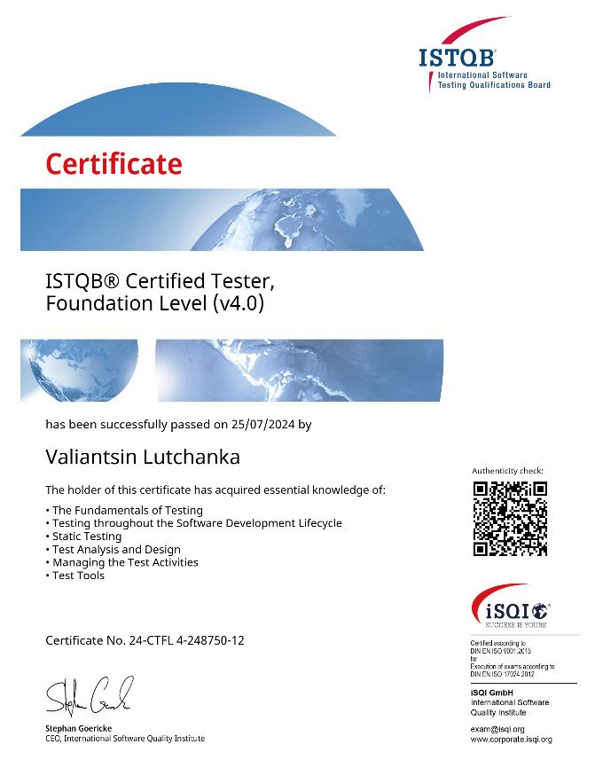
CTFL v4.0 · ISTQB / iSQI · 2024
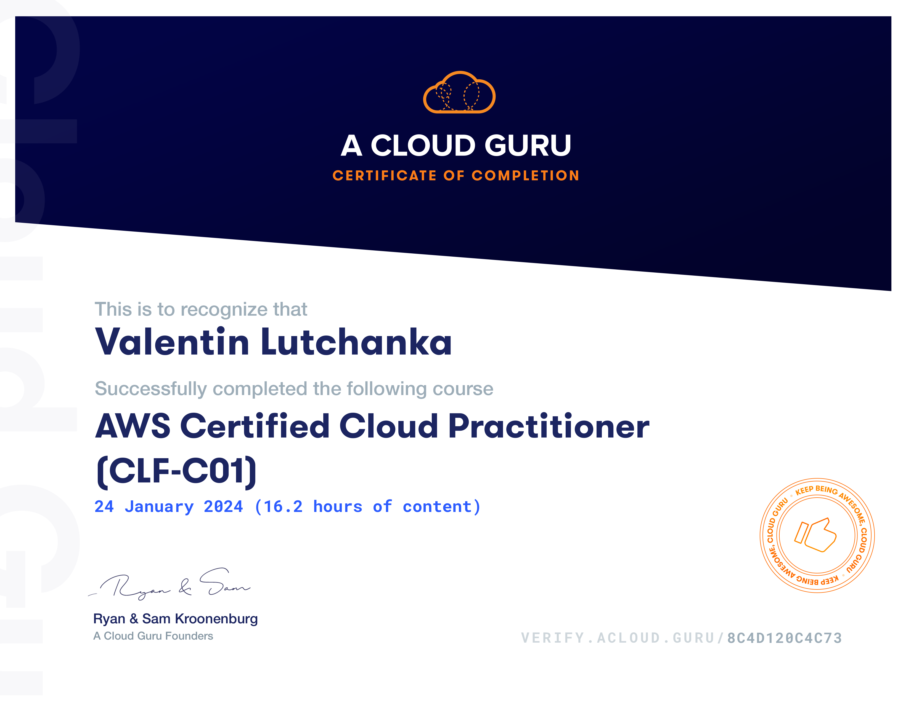
Amazon Web Services · 2024
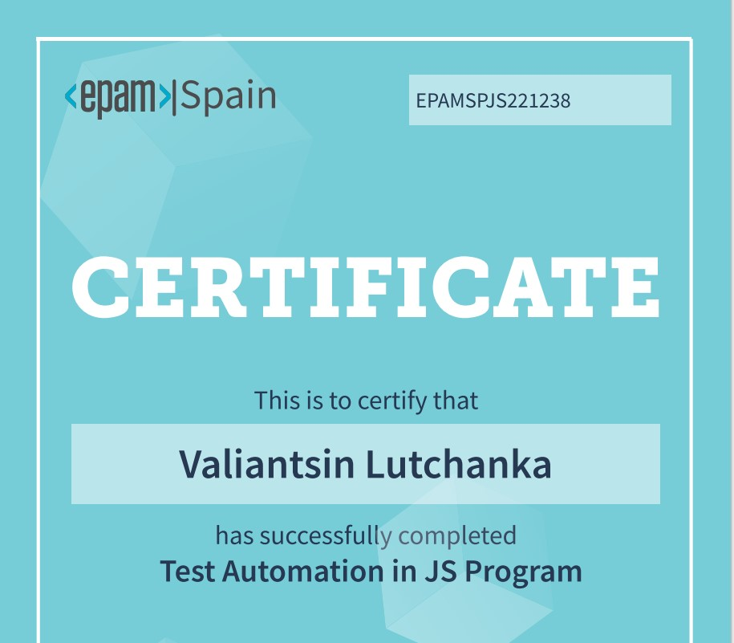
EPAM · 2023
Google Professional Certificate · 2024
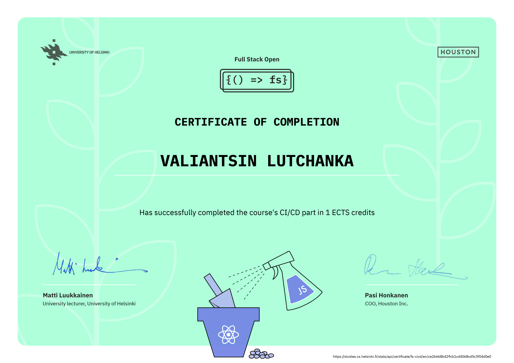
University of Helsinki · 2024
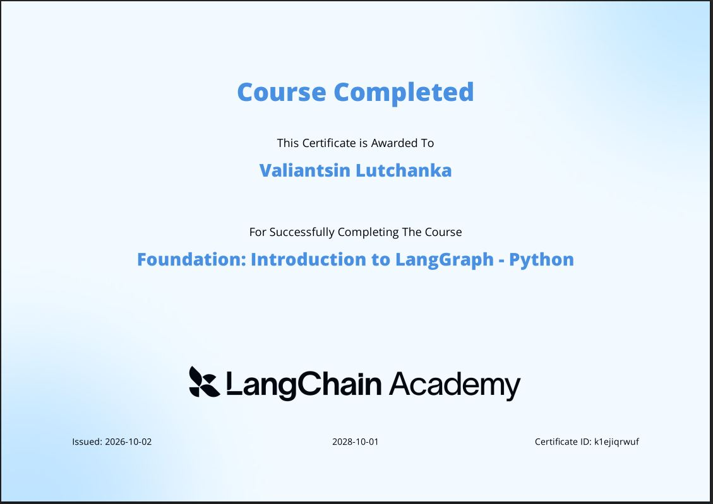
LangChain Academy · 2026
I am open to Head of AI Quality and QA engineering leadership roles. The fastest way to reach me is email or LinkedIn.